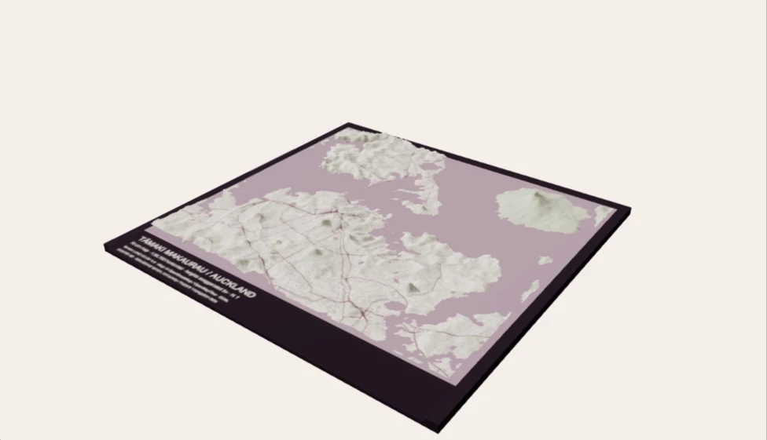

Tāmaki Makaurau · terrain you can turn
Auckland, on your table.
Follow the harbour. Look along the ridges. See how a city fits its land.

Loading the terrain…
Drag to turn · pinch or scroll to zoom · north is towards the back of the board
A model with its sources attached.
Terrain: Toitū Te Whenua LINZ, CC BY 4.0. Bare-earth elevations in NZVD2016, from the existing Auckland sample asset. This mesh further resamples to approximately 112 m; it is not raw LiDAR or survey-grade detail. No buildings are modelled.
Mapped coastline, parks, streets and footprints: © OpenStreetMap contributors / OpenMapTiles via OpenFreeMap, ODbL 1.0. The fixed source extract may contain omissions or date differences. Water is a visual background, not bathymetry. Nothing here predicts floods, hazards or safe routes.
Scale & file metadata · Terrain provenance · Map sources · ODbL